Set up, step by step
From the invite link to your first laps. About ten minutes, most of it next to the bike.
Got the box but no invite text yet? Do step 0 now. Steps 1 to 5 start when we text you the link.
Get the box ready
Do this first, so the box charges while you set up the app.
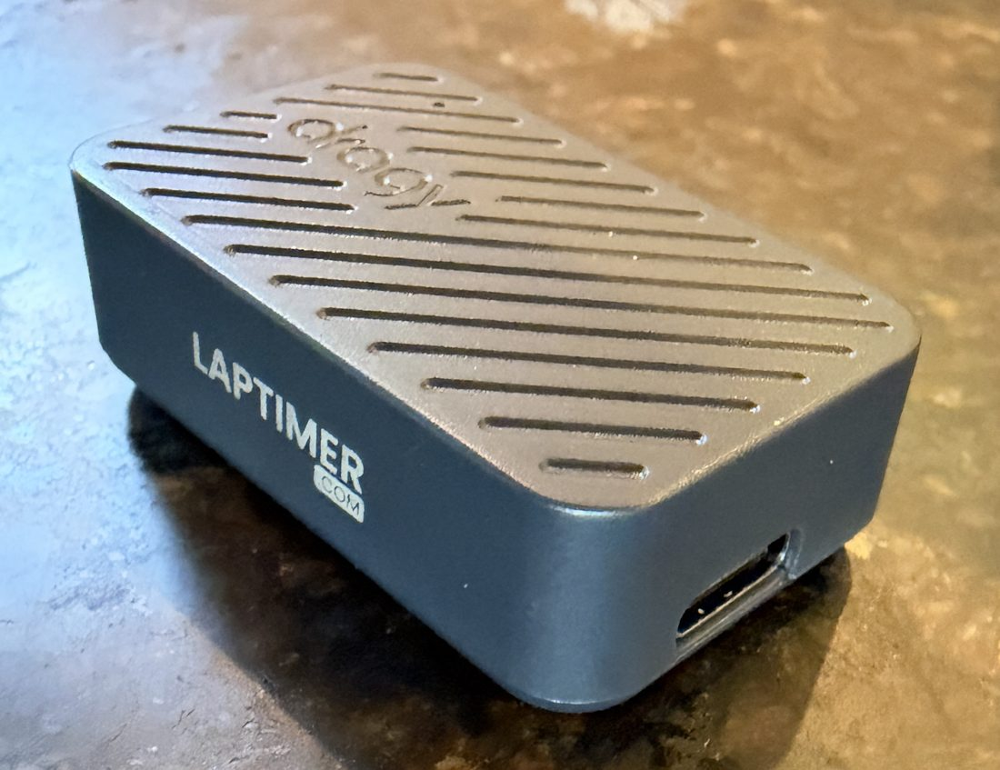
This is the box, a Dragy Lite. The charging cable plugs into the end.
Plug it in. The Dragy Lite has no power button. Plugging it in the first time turns it on, and it stays on. A full charge takes a few hours. Overnight is easiest.
Watch the light. It tells you what the box is doing.
- Red, blinkingCharging.
- Blue, every 5 secondsOn and waiting for your phone.
- Blue, every 2 secondsConnected to your phone.
- Orange, every 2 secondsRecording.
Leave it on the charger until you head to the track. It's fine to leave it plugged in all week. Off the charger it slowly runs down, even sitting still, and is empty in a day or two.
Install the app
The iPhone app is in testing, so for now it comes through Apple's TestFlight app.
- Open app.mototoolsmx.com in Chrome.
- Sign in with your email and the code we email you.
- On your rider's page, tap CONNECT YOUR BOX, tap your box in the list, then Pair.
- Keep Bluetooth and Location on.
Tap the invite link we sent you.
If it asks, install TestFlight from the App Store. It's free and made by Apple.
Tap the invite link again, then tap Accept and Install. You'll see Moto Tools loading.
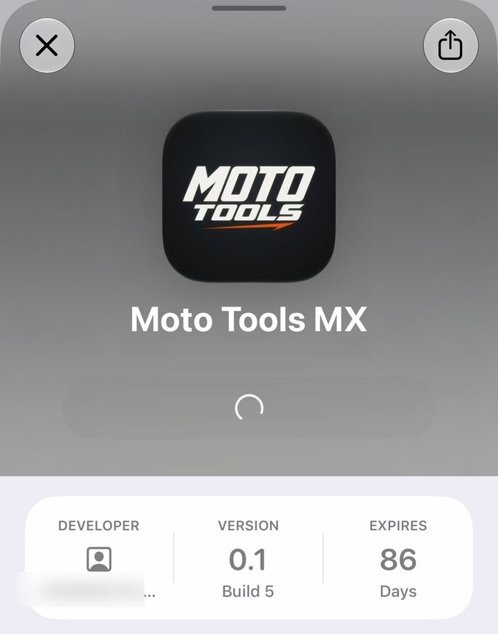
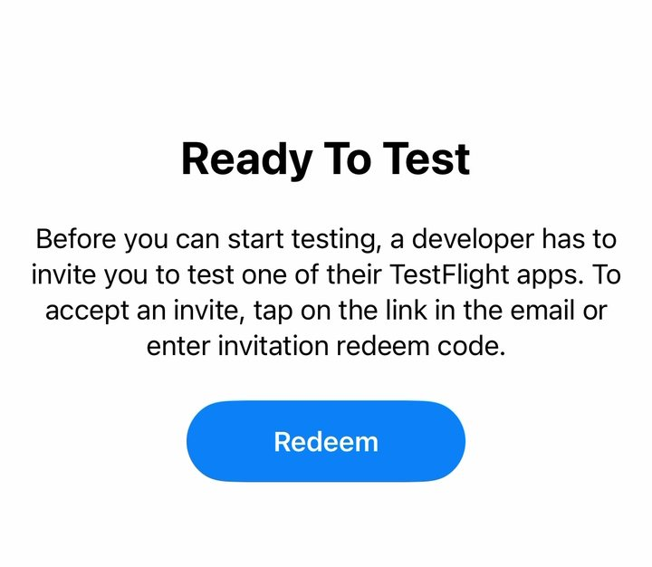
Open it and sign in
Open Moto Tools. When it asks about Bluetooth, tap Allow. That's how the app talks to the box.
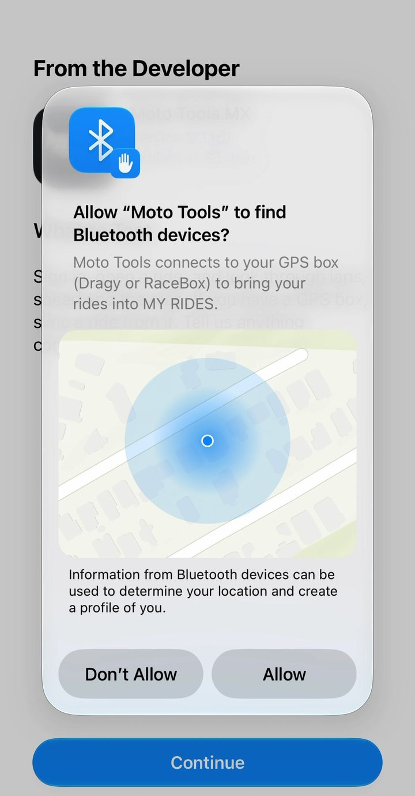
Type the email you gave us and tap Email me a code. There's no password to remember.
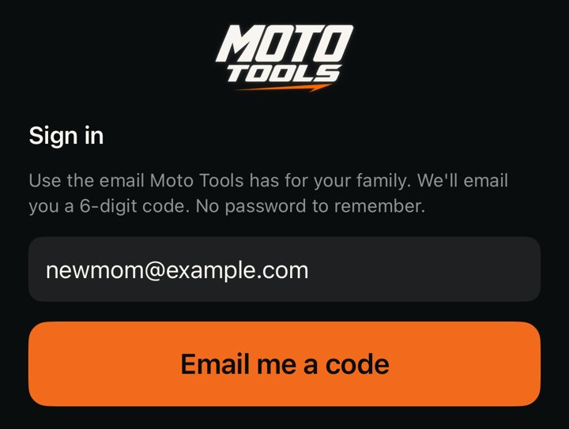
Type in the 6-digit code from that email. It can take a minute, and it can land in spam.
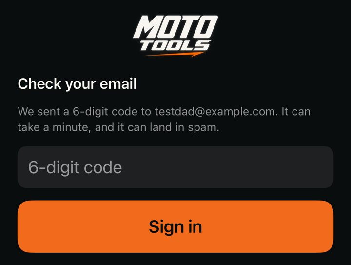
You're in. This is your rider's page, with their plate at the top.
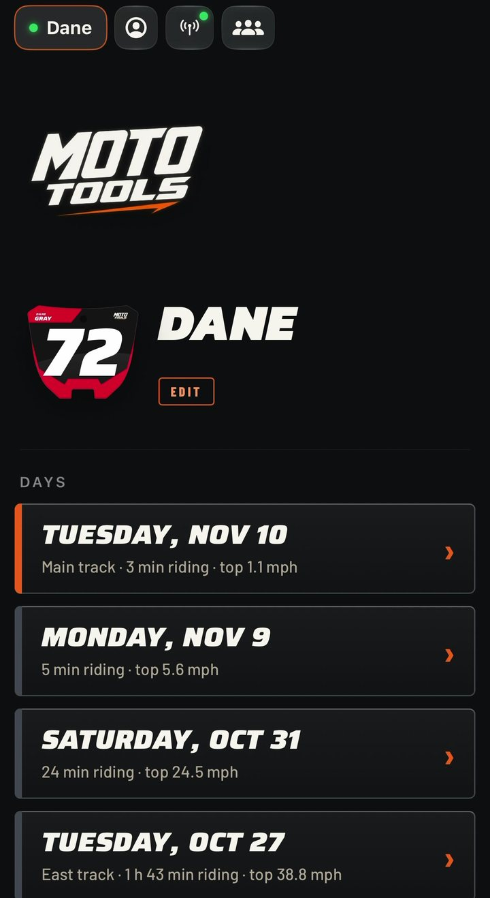
Stick the box on the bike
The box rides on Velcro. Done right, it does not come off. The best spot is in front of the tank.
Clean the spot with rubbing alcohol and let it dry. This is the step that makes it hold. Dust, chain lube and tire shine all stop the glue from sticking.
Peel the Velcro and press it on hard for 30 seconds.
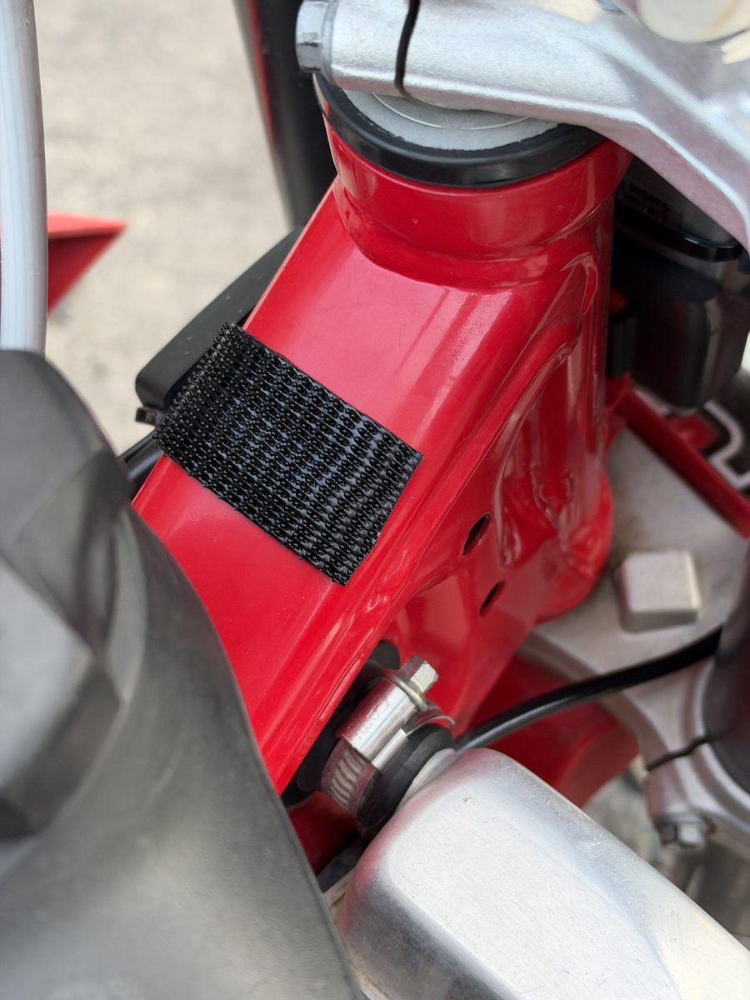
Press the box onto the Velcro, flat side up to the sky. Then give it a tug. It should take a real pull to get it off.
Done. It should look like this.
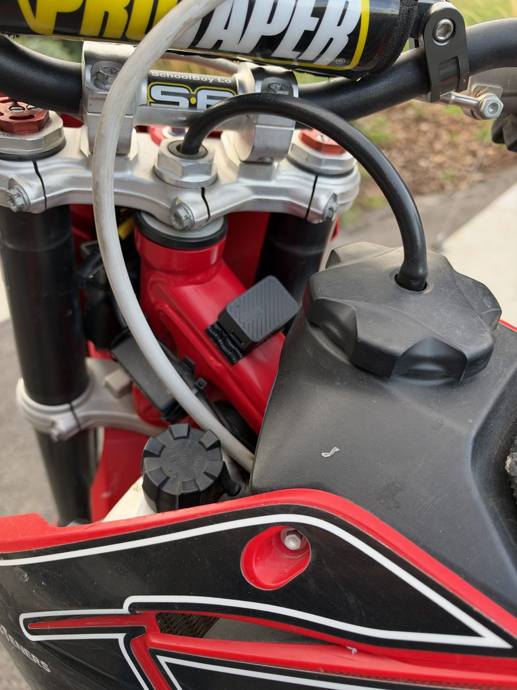
No room there? Use the number plate
The top of the front number plate works too. Same steps: alcohol, Velcro, press, tug.
Connect the box
You do this once. Turn Bluetooth on in your phone's Settings and stand next to the bike. The box is already on if its light is blinking (step 0).
Open the app. Under your rider's name there's a bar that says Connect your box. Tap Set up.
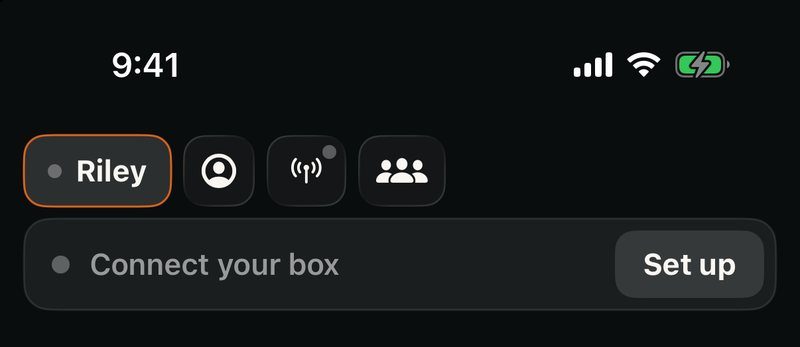
It says No box yet. Tap Pick your rider's box. (The orange How to set up link under it brings you back to this page.)
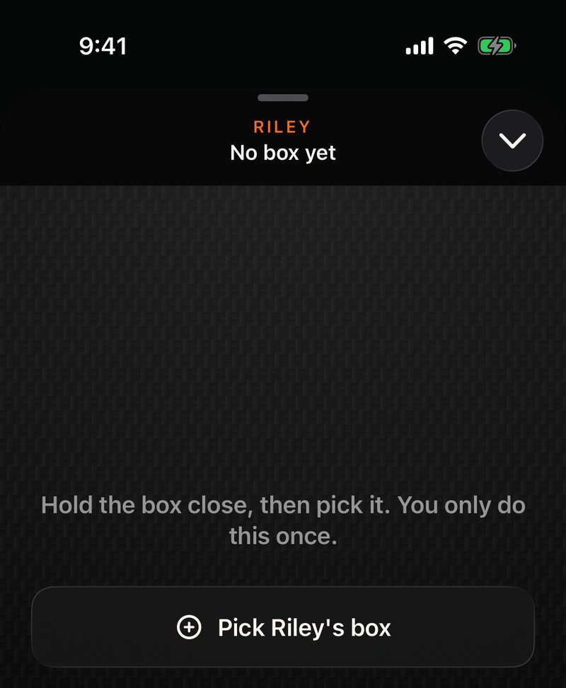
Hold the box close and tap it in the list. With one box nearby, it's the only one there.
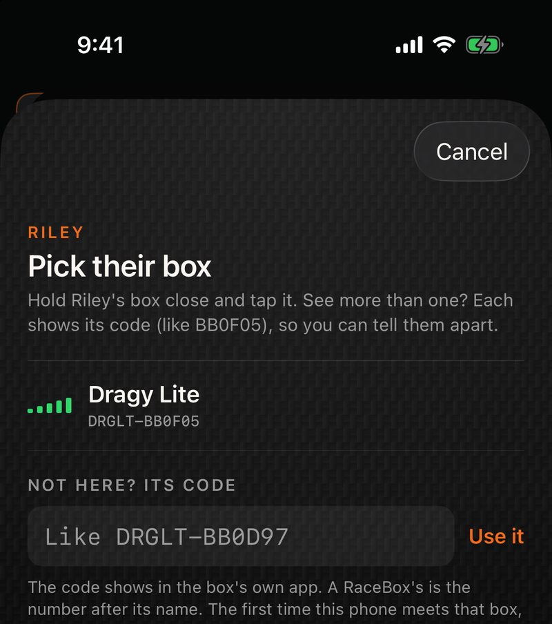
Tap Yes, give it to your rider.
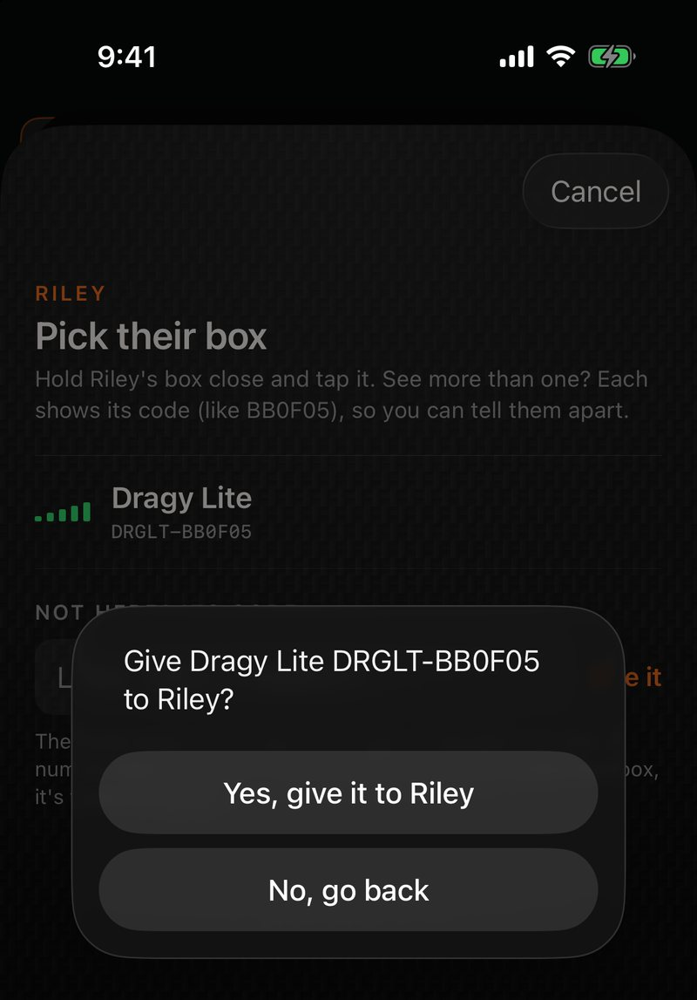
It looks for the box for a few seconds and connects by itself. If you have the Dragy app open, close it first. The box talks to one phone at a time.
Box is ready means you're connected. This is the box screen. The green dot is GPS, and the battery and storage are along the bottom.
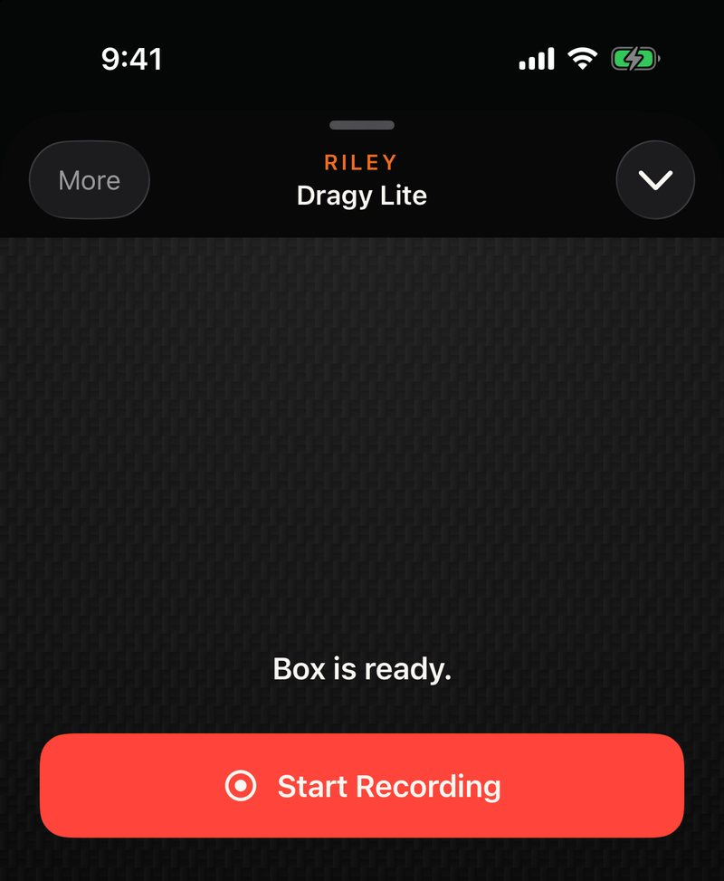
Ride, then look
In the pits, before each session, open the app next to the bike. The bar under your rider's name says Box ready. Tap the red Record button. The box's light turns orange.
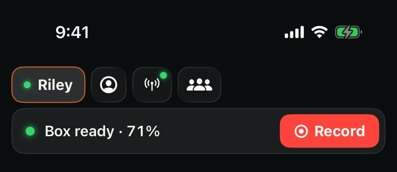
Go ride. The box records by itself, so the phone doesn't ride on the bike. Keep it in your pocket or leave it in the pit.
Back at the pit, open the app next to the bike. It finds the box again. Tap Stop, then Stop Recording to confirm.
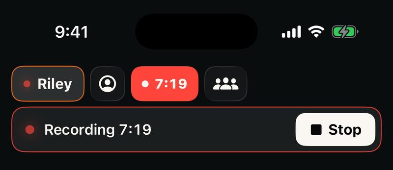
The ride saves by itself and shows up under MY RIDES. A long ride can take a few minutes. Keep the box close until it's done.
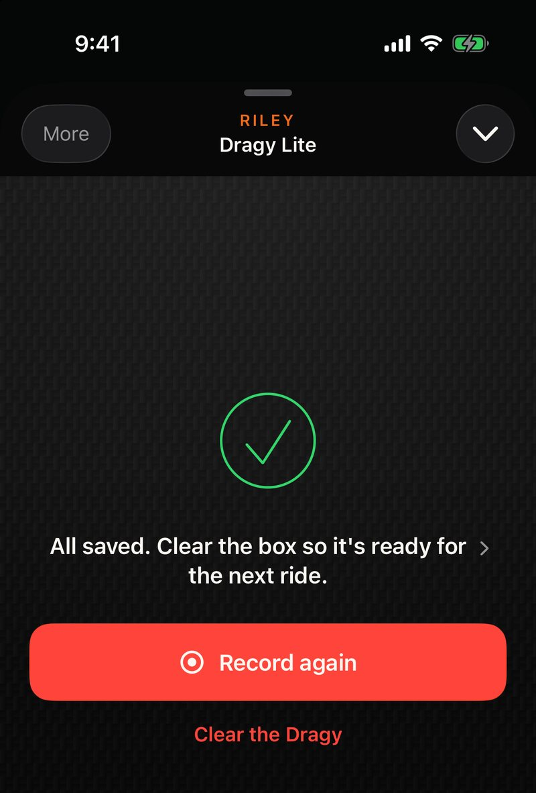
Tap a day to see every lap on the map.
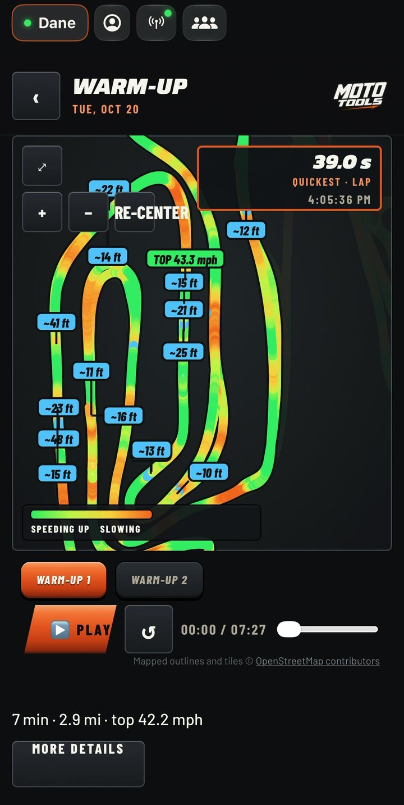
Ask us
Email hello@mototoolsmx.com. Tell us which step you're on and we'll get you going.